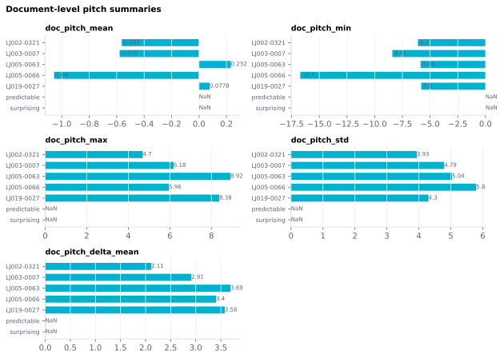

6.2.7Document-level pitch summaries
Five document-level summaries of F0 across the entire stimulus, in the same units as the word-level pitch columns (semitones relative to speaker median by default; Hz if configured).
6.2.7.1What it is
Five document-level summaries of F0 across the entire stimulus, in the same units as the word-level pitch columns (semitones relative to speaker median by default; Hz if configured).
| Column | What it summarizes |
|---|---|
doc_pitch_mean |
Mean F0 across all voiced frames in the audio. |
doc_pitch_min |
5th-percentile F0 over the audio. |
doc_pitch_max |
95th-percentile F0 over the audio. |
doc_pitch_std |
Standard deviation of F0 across the audio. |
doc_pitch_delta_mean |
Mean of the absolute word-level Pitch_Delta values (rises and falls don't cancel). |
The first four operate on the raw F0 contour (all voiced frames),
not on the per-word means — so doc_pitch_mean ≠ mean(Pitch_Mean)
when some words contain few voiced frames.
6.2.7.2See it

6.2.7.3In your output
| stimulus_id | doc_pitch_mean semitones | doc_pitch_min semitones | doc_pitch_max semitones | doc_pitch_std semitones | doc_pitch_delta_mean semitones |
|---|---|---|---|---|---|
| LJ002-0321 | -0.5632 | -6.095 | 4.696 | 3.935 | 2.113 |
| LJ003-0007 | -0.5784 | -8.407 | 6.176 | 4.794 | 2.912 |
| LJ005-0063 | 0.2325 | -5.858 | 8.92 | 5.04 | 3.691 |
| LJ005-0066 | -1.056 | -16.71 | 5.955 | 5.796 | 3.404 |
| LJ019-0027 | 0.0778 | -5.803 | 8.38 | 4.302 | 3.576 |
6.2.7.4MATLAB
% Load the document-level table (one row per stimulus)
T = readtable('document/documents_summary_<timestamp>.csv', 'TextType', 'string');
T.Properties.VariableNames % every column in the file
head(T(:, {'stimulus_id', 'doc_pitch_mean', 'doc_pitch_min', 'doc_pitch_max', 'doc_pitch_std', 'doc_pitch_delta_mean'}), 10) % this feature's columns (first rows)
% Plot
barh(T.doc_pitch_mean); yticks(1:height(T)); yticklabels(T.stimulus_id); xlabel('doc_pitch_mean')
6.2.7.5In the code
Source: sensi/extractors/prosody.py:compute_doc_prosody — see the
document-batch finishing step in sensi/pipeline.py which calls it.
doc_pitch_* (other than the delta) come from a single Praat call
over the full audio file via the same Contours object used by the
word-level extractor. Percentile-based min/max for the same
robustness reason as the word-level columns: octave-jump errors
otherwise dominate true extrema.
doc_pitch_delta_mean is computed in pandas as
word_df["Pitch_Delta"].abs().mean() (NaN-aware) — the mean absolute
delta, so a rise followed by an equal fall counts as movement rather
than cancelling to zero. It requires the
word-level prosody stage to have already run (the planner enforces
this).
6.2.7.6Library
See word-level pitch features — same Parselmouth calls, just aggregated over the whole audio rather than per-word windows.
6.2.7.7EEG rationale
Document-level pitch statistics are stimulus-matching covariates:
two stimuli that differ in mean pitch (e.g. a male vs. a female
narrator) will produce systematically different early auditory ERPs
that confound any higher-order linguistic contrast. Including
doc_pitch_* lets you regress out gross speaker-level pitch
differences without ascribing them to lexical or syntactic effects.
doc_pitch_std is a single-number prosody-variability summary —
useful as a covariate when matching stimuli on expressiveness across
recording sessions or speakers.
doc_pitch_delta_mean differs from the other four: it's the average
word-to-word movement magnitude (unsigned) rather than a contour-frame statistic. Useful
when the question is about overall prosodic dynamism rather than range.
6.2.7.8Papers
See prosody_pitch for the foundational
references; the document-level summaries inherit the same theoretical
rationale.